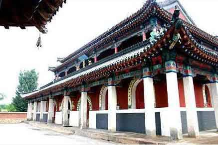
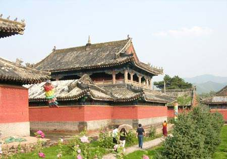

喀喇沁亲王府是清朝贡亲王的府邸，是蒙古族杰出的思想家、政治家、改革家贡桑诺尔布的故居，现已被辟为喀喇沁旗王府博物馆。始建于清康熙十八年（1679年），坐落于内蒙古赤峰市喀喇沁旗王爷府镇，位于承德东北150公里，赤峰西南70公里处。先后有十二代喀喇沁蒙古王爷在此袭政，是内蒙古现存王府建筑中建成年代最早、建筑规模最大、规格等级最高、保存最好、知名度最高的一座古建筑群，全国重点文物保护单位。府邸原占地面积300余亩，房屋490余间，两层院落，主体建筑分大堂、二堂、仪门、大厅和承庆楼，院内苍松古柏，幽雅恬静，楼阁殿堂，相映成辉，是研究中国古代史和蒙古族文化不可缺少的见证。[1]
自1997年起，喀喇沁旗投资2000多万元对该建筑群进行了修缮。现已建成有20个展室、千余件珍贵文物的喀喇沁旗王府博物馆。这里是内蒙古自治区最大的古建筑群和第二大博物馆，每年都接待大量国内外游客。 2001年6月，喀喇沁亲王府被国务院公布为全国第五批重点文物保护单位，2006年4月，被评为“国家AAAA级旅游景区”。 燕贻堂首次对游人开放，燕贻堂是清朝王爷听戏的场所，其恢复建设项目于2006年下半年开工，整个工程总投资450万元。 燕贻堂首次对游人开放后，游客除可观赏到燕贻堂古建之外，还可欣赏燕贻堂实景演出，主要有喀喇沁蒙古族迎宾歌舞宝典、乐舞《大番曲》、哈达迎宾舞、蒙古拳对歌等。 喀喇沁亲王府后花园复建项目于2008年8月5日开工，作为喀喇沁旗委、政府2009年实施的重点旅游建设项目之一。该项工程计划投资700万元，建设面积50亩，其中仿古建筑面积800平方米，人工湖水面面积6000平方米，园林绿化面积2400平方米。7处仿古建筑，包括涤俗庵、绿蔼堂、四宜堂、丹霞楼、眠亭榭、长云亭、六角亭。4处人工湖，1处叠水，1座曲桥，1座拱桥。在2010年8月1日自治区两个精神文明经验交流会在赤峰召开之际，对游人开放。
